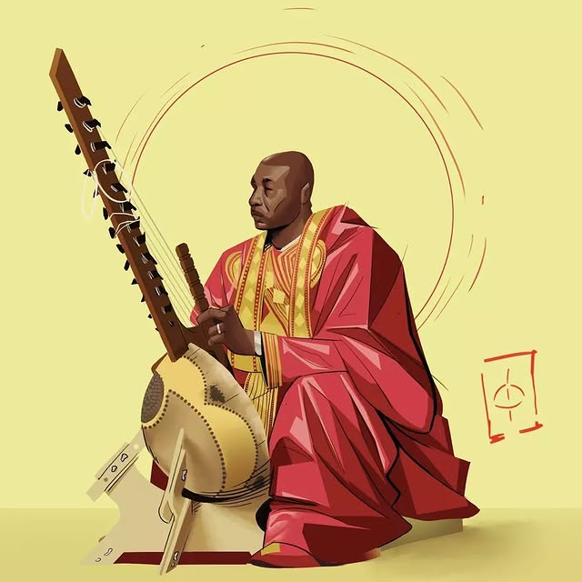

Artwork 04
Bold expression of natural beauty and artistic confidence.

This piece continues our exploration of natural beauty through vibrant color and expressive line work. The composition radiates confidence and joy, capturing a moment of pure self-assurance that resonates with viewers. Using a bold color palette and dynamic brushwork, the artwork transforms a simple portrait into a statement about identity and self-love. The energetic style reflects the Lwanimations philosophy of turning everyday emotions into visual celebrations. Each stroke carries intention, building up layers of meaning while maintaining a sense of spontaneity and freshness that keeps the piece feeling alive and immediate.